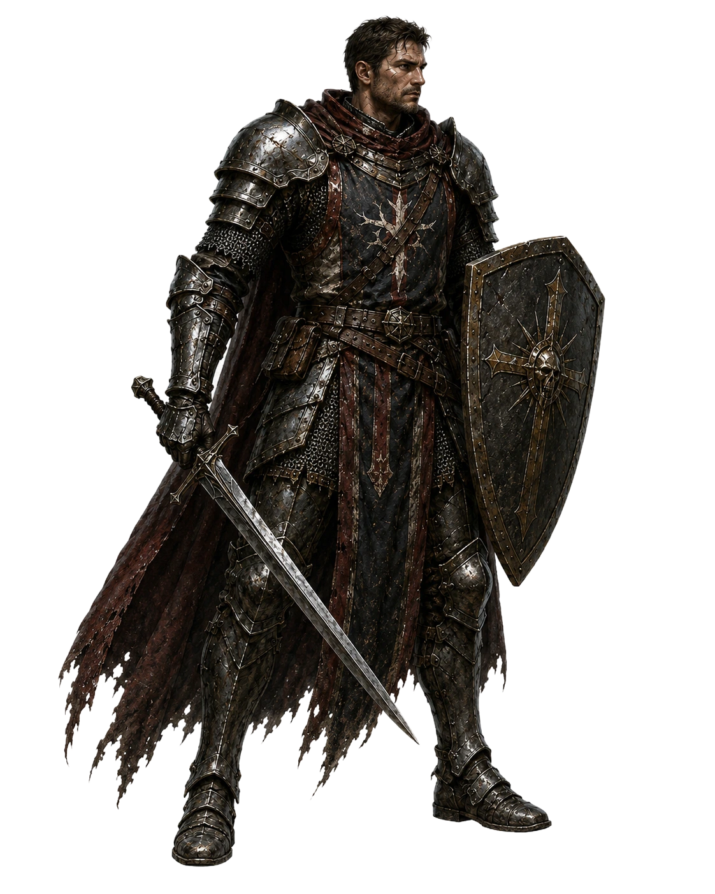

Wegwerf-Technik-Beweis für den 0.4.0-Assessment (kein Produktivcode, keine App-Datei berührt).
Zeigt zwei echte Zonen-Kulissen aus dem Repo (unverändert, per relativem Pfad geladen) in einer
perspective-Bühne mit gekipptem Boden, zwei Parallax-Ebenen und aufrechten Sprites mit
elliptischem Kontaktschatten und Tiefen-Staffelung. Weiden nutzt die dedizierte, bereits vom
Chef gelieferte pastures_ground.webp (das Chef-Bodenbild aus dem three.js-Prototyp — ein
reines Asset, technikneutral wiederverwendbar). Gruft hat keine dedizierte Bodenplatte —
dort wird testweise der untere Streifen der normalen 2D-Kampf-Kulisse gekippt, um das Verzerrungsrisiko
ehrlich sichtbar zu machen (siehe Befunde unten).

perspective + rotateX liefert einen klar
erkennbaren "Bühne mit Tiefe"-Eindruck ohne jede GPU-Textur/Canvas — reines Compositing.translateZ-Staffelung + elliptischem Radial-Gradient-Schatten
lesen sich sofort als "stehen auf dem Boden", genau wie die three.js-Billboards.pointer-events/normales
<img>-Element, kein Raycasting nötig) — anklicken oben rechts zum Test.rotateX legt eine ZWEITE Perspektive
darüber → "Doppelperspektive", am unteren Bildrand am stärksten. Ohne dedizierte flache
Bodenplatte pro Zone bleibt das ein Kompromiss, kein sauberer Boden.bull_boss.webp hat ~17% transparente Fußzone,
skeleton_warrior.webp ~9% (real gemessen, nicht geschätzt). Ohne Pro-Sprite-
Kalibrierung (Foot-Inset wie im three.js-Prototyp) schweben Figuren unterschiedlich stark
über dem Boden — dasselbe Problem wie bei WebGL, nicht durch DOM/CSS vermieden.fxLevel="off"/prefers-reduced-motion (Buttons oben) friert die
Parallax-Drift ein — funktioniert hier bereits als Beweis, dass sich das bestehende FX-Gate
1:1 auf diese Technik überträgt.